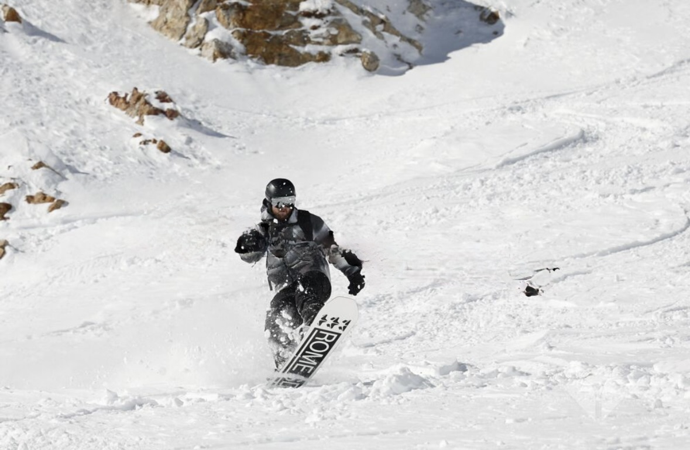

Our Mission
At Nomadic Performance, we believe health and performance should be proactive, not reactive.
Our mission is to help outdoor athletes move better, train smarter, and build resilient bodies that can handle the real demands of adventure. Through evidence-based physical therapy, strength training, and performance education, we bridge the gap between rehabilitation and performance.
Because staying active shouldn’t depend on recovering from injury — it should come from preparing your body to thrive for life.
Our Vision
Nomadic Performance exists to redefine what health, strength, and performance look like for outdoor athletes who live life beyond the gym.
We envision a future where mountain bikers, climbers, skiers, and adventure seekers have access to world-class physical therapy, training, and performance resources—no matter where they are. From remote trailheads to virtual screens, we meet athletes where they move.
Our goal is to bridge the gap between injury prevention, rehabilitation, and performance optimization through a fully integrated, mobile-first platform. We deliver:
- Sport-specific training programs rooted in research and real-world application
- Virtual and in-person performance assessments tailored to the demands of mountain sports
- On-demand physical therapy consultations and rehab programs
- A personalized membership ecosystem offering continuous care, education, and goal-based planning
We believe that proactive, personalized wellness not only prevents injury—but also unlocks new levels of adventure, confidence, and longevity.
About Me

Hi, I’m Joe.
I’m a Doctor of Physical Therapy, Strength & Conditioning Coach, and lifelong outdoor athlete who believes the best days happen outside.
Whether it’s skiing fresh powder, climbing new routes, riding mountain trails, or running through the mountains, I’ve always been drawn to activities that push both the body and mind.
But through my work as a physical therapist, I’ve also seen the other side of outdoor sports—injuries that keep people away from the activities they love.
That experience shaped the way I approach training.
Instead of waiting for injuries to happen and then fixing them, I believe athletes should prepare their bodies ahead of time—building strength, resilience, and movement control so they can stay active for decades.
That philosophy led me to create Nomadic Performance.
Nomadic Performance sits at the intersection of rehabilitation and performance—combining evidence-based physical therapy, practical strength training, and mobility work to help outdoor athletes move better and stay injury-free.
I believe you don’t need a perfect gym or complicated equipment to build a capable body. What matters most is smart training, consistency, and preparing your body for the real demands of outdoor adventure.
Get in Touch
Have questions about performance training, injury prevention, or want to work together? Reach out at joe@nomadicperformance.com. We'd love to hear from you.